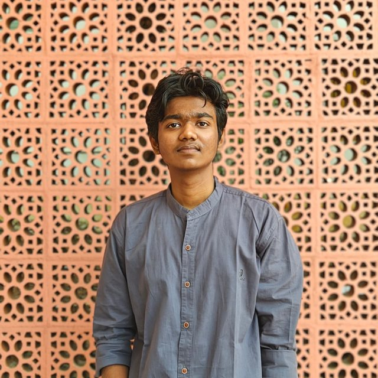

Open to SDE internships
Full-stack & AI developer
Chennai, India
I build FastAPI and React applications and retrieval-augmented generation systems, on a foundation of data structures, databases and operating systems. B.Tech CSE, Amrita Vishwa Vidyapeetham.
Ask my
portfolio
- Query
- Sparse · BM25
- Dense · char-grams
- Fusion · RRF
- Rerank
- Answer
Embedding space · 17 chunks · MDS of char-gram vectors · lime = projects · hover a dot
A tiny hybrid retriever running in your browser, the same idea as RagForge. Press ⌘/Ctrl + K from anywhere.
An engineer in training who ships. I build full-stack and AI-powered applications: FastAPI backends, React frontends and RAG pipelines, mainly in Python, Java and C++. I lead PR at AMCFOSS, Amrita's free and open source software club, use Linux daily, practise DSA every day and hold HackerRank's SQL (Advanced) certificate.

Now building — AIKA, a multi-tenant RAG platform
- IdentityShipped · v0.1
- TenancyShipped · v0.2
- DocumentsNext
- RetrievalPlanned
Selected
projects
& Education
Where I've
led, learned
PR Lead, AMCFOSS
Amrita Vishwa Vidyapeetham, Chennai
Industry and sponsorship outreach: researching organizations, managing a sponsor tracker, and building partnership and internship pipelines. Member onboarding and volunteer coordination across workshops, hackathons and coding contests.
B.Tech, Computer Science
Amrita Vishwa Vidyapeetham · CGPA 8.08 · 4th semester
DSA, Operating Systems, DBMS, Computer Architecture, OOP, Algorithms, Computer Networks.
Class XII and X, CBSE
Achariya Siksha Mandir, Pondicherry · 75% in both
Tools I
work with
Languages
- Python
- Java
- C++
- C
- Haskell
- SQL
- VHDL
Web & backend
- React
- FastAPI
- REST APIs
- JavaScript
- HTML / CSS
- Bootstrap
AI & tooling
- RAG
- LLM Integration
- Computer Vision
- Recommenders
- OpenAI API
- Git · Linux
CS core
- PostgreSQL
- MySQL
- DSA · OOP
- OS · DBMS
- Networks
- System Design
- HackerRank · SQL (Advanced)
- HackerRank · SQL (Intermediate)
- HackerRank · SQL (Basic) & Python (Basic)
- IBM · Generative AI in Action
- Infosys Springboard · GPT-3 for Developers
- Infosys Springboard · AI for Everyone & AI Foundations
- Infosys Springboard · UNIX & Linux Foundations
- Amrita · DBMS Certificate
- Cisco · Networking Basics